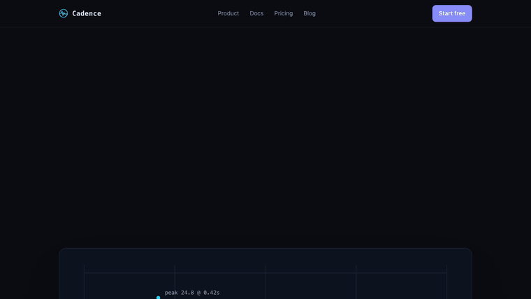
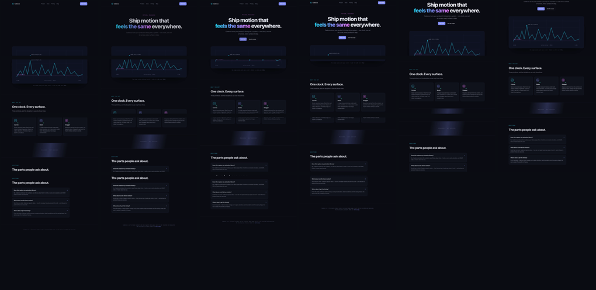

example · whole-page walkthrough
Cadence is an original page — our design, our copy, our SVG. We recorded a walkthrough of it, fed the recording back through motiscope, and published everything it got right and the two things it got wrong.
scroll inside the frame · this is the real thing, not a video
4.85s at 20fps · the recording motiscope was given

every scroll boundary, to within one frame
The walkthrough has four pauses. motiscope found four holds, and every boundary between a scroll and a pause lands on the authored millisecond — the clip runs at 20fps, so one frame is 50 ms.
| Authored | Measured | |
|---|---|---|
| hero entrance, 0ms | move 0..400ms | under-read — see below |
| pause @ 0px, 1250ms | hold 450..1450ms | section 1 |
| scroll 0→900px, 1500ms | move 1500..2100ms | exact |
| pause @ 900px, 2150ms | hold 2150..2400ms | exact |
| scroll 900→1600px, 2450ms | move 2450..3050ms | exact |
| pause @ 1600px, 3100ms | hold 3100..3350ms | exact |
| scroll 1600→2100px, 3400ms | move 3400..3800ms | exact |
| pause @ 2100px, 3850ms | hold 3850..4050ms | exact |
| scroll 2100→2480px, 4100ms | fade-out 4100..4800ms | right time, wrong label |
This is what rebuild-site is built on. The holds are the sections;
the moves are the transitions between them; the curated frames show you what each section
contains.
two failures, both instructive
The hero is four elements, each 700ms with cubic-bezier(.16,1,.3,1),
90ms apart. Together they run from 0 to about 970 ms.
motiscope reports move 0..400ms, easing ease-in-out.
ease-in-out. Every element is ease-out;
their sum is not. Per-element easing is not recoverable from aggregate energy — it comes
from the frames, which is exactly the division of labour the tool is built on.
The stagger hint tells the same story: it reports 342ms, right-to-left.
That is the scroll, not the 90 ms hero stagger. On a walkthrough the dominant motion is the
page moving, and the hint describes the dominant motion honestly.
The last scroll lands on a dark footer. Brightness genuinely ramps down, and
blackdetect fires for the final 0.45 s, so the segment is labelled
fade-out — with a beautifully fitted
cubic-bezier(0.16, 1, 0.3, 1), which is real and irrelevant.
The timing is right: the segment starts at 4100ms, the exact authored moment. The label is wrong. A page whose footer is darker than its hero will do this to you, and no amount of signal processing fixes it — a human (or a model reading the frames) has to look and say “that’s a scroll.”
measurement-traps.md now carries both lessons.
22 curated keyframes at 1280px · the landing preset

landing preset is for. Timestamps and reasons in
report.md.Given these frames and that segment table, a model can reconstruct the sections, the copy, the
design system and the motion per section — and wire it to measured timing rather than
guessed values. That is the whole of rebuild-site.
the honest reason
The previous whole-page example was a faithful recreation of someone else’s Dribbble concept, credited and framed as a study. It demonstrated the capability, and it also published a clone of a designer’s work on our own site.
Cadence demonstrates exactly the same thing and owes nobody. The page is original, the
constants are in its CSS, and the comparison above is checkable rather than asserted. The
rebuild-site skill now leads with a rights step: if the recording is of someone
else’s site, offer a credited study — or rebuild the structure and motion under the
user’s own art and copy.
the page is the source of truth — the constants are in its CSS
motiscope analyze landing.mp4 --preset landing # -> report.md + 22 curated framesThe page freezes on an exact time and scroll via #f=<ms>:<px>, which is
how the recording was rendered frame by frame — a hero entrance at scroll 0, then a pause on
each section.
{kind=link}